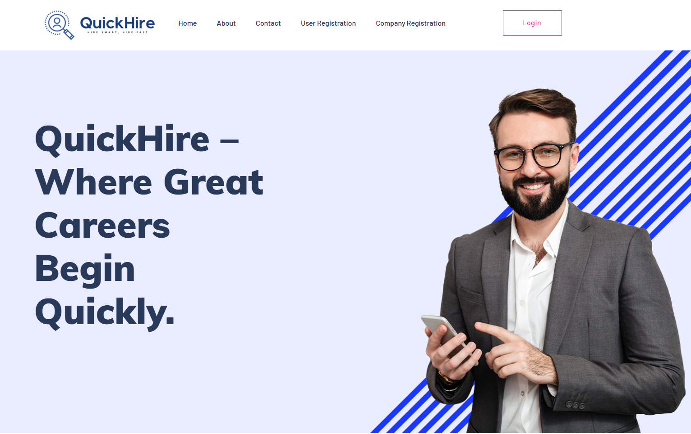

Python · Django · SQLite · Bootstrap
Online Job Portal
A full-stack recruitment platform developed with Python and Django, connecting job seekers with verified companies through structured hiring workflows.
Online Job Portal is a full-stack recruitment web application built using Python and the Django framework. It provides an end-to-end platform connecting job seekers with registered companies. The portal features dedicated workflows for candidates to build profiles, upload resumes, search vacancies by criteria, and track their application progress in real time. Employers can register, undergo administrative approval, post vacancies with skill requirements, review applicants, and schedule candidate interviews with automated email notifications.
Key Features
✓Multi-role access: Job Seeker, Employer/Company, and Administrator
✓Admin verification pipeline requiring approval before companies can post jobs
✓Company dashboard to publish vacancies with required skills, qualifications, and deadlines
✓Job seeker dashboard with profile creation, resume upload, and skill tagging
✓Multi-criteria job search filtering by category, qualifications, and location
✓Real-time application status tracking (Shortlisted, Interview Date Fixed, Appointed)
✓Candidate shortlisting and interview scheduling with automated email updates
✓Admin governance suite for account management, job moderation, and platform security
Technology Stack
Python
Django Framework
SQLite / MySQL
Bootstrap
JavaScript
HTML5 / CSS3
Project Impact
Streamlines the recruitment journey into an integrated, transparent workflow with automated notifications and role-based access for applicants and recruiters alike.
Streamlines the recruitment journey into an integrated, transparent workflow with automated notifications and role-based access for applicants and recruiters alike.